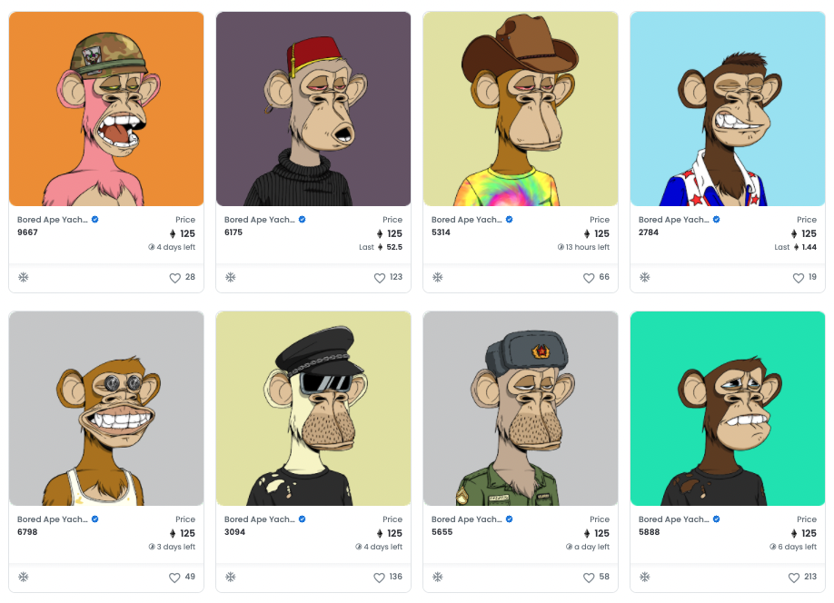
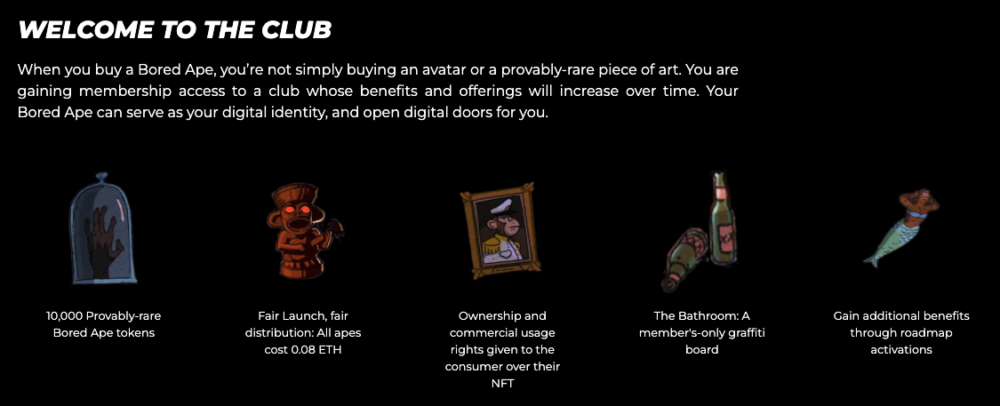
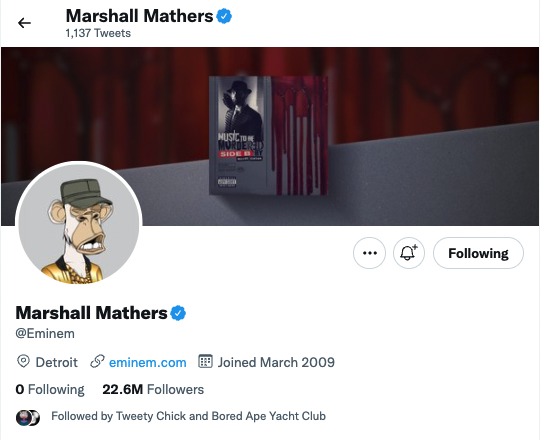
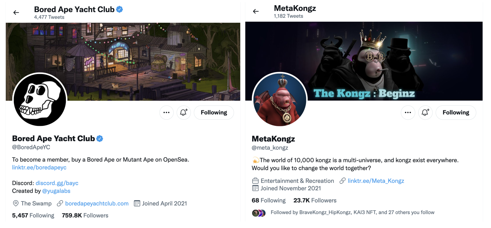
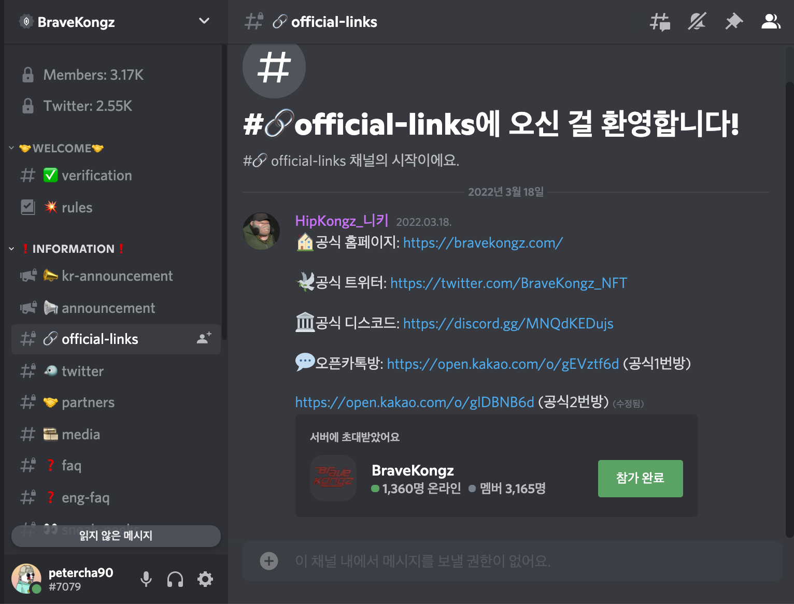

What is NFT.
- 안녕하세요, PETER입니다. 👋 이번 포스팅을 다 읽고 나시면,
- NFT의 뜻.
- 왜 NFT Project는 수요와 공급을 불러일으킬 수 있는지.
- NFT 프로젝트 정보를 얻는 방법.
에 대해 아실 수 있습니다.🖊
1. NFT란?
- NFT는 Non-Fungible Token의 줄임말로, 직역하면 ‘대체 불가능한 토큰’이라는 뜻입니다. 그럼 대체 가능한 토큰은 뭘까요? 그리고 ‘토큰’은 또 뭘까요?
대체 가능한 토큰, Fungible Token 💵
- 'Token' 이라는 것은 'Coin'이라 부를 수 있는 Ethereum이나 Klaytn과 같은 녀석들과는 다르게, 자체적인 블록체인 네트워크. 즉, Mainnet이 없어 다른 블록체인 네트워크를 기반으로 만들어진 암호화폐를 뜻합니다.
- 과거 이오스나 트론은 코인이 아니라 이더리움 기반의 토큰이었지만, 현재는 자체적인 메인넷을 가지고 있는 코인입니다. 아무튼, 이오스나 트론이 토큰이었다고 생각을 해보면, 대체 가능한 토큰이 무엇인지 잘 알 수 있습니다. 내가 가지고 있는 1 TRON과 친구가 가지고 있는 1 TRON은 서로 같은 TRON입니다. 서로 교환을 해도 똑같은 가치를 지니죠. 말 그대로 ‘대체 가능한 토큰’이라는 말입니다.
대체 불가능한 토큰, Non Fungible Token ✨
이제는 NFT의 상징 중 하나가 되어버린, 아래 Bored Ape Yacht Club을 보시죠. 이 원숭이들은 ‘이더리움 블록체인 네트워크’에 등록되어 있으며(이더리움을 기반으로 하는 Token), 그 위에서 ‘이더리움을 입금하면, 이 세상에 단 하나밖에 없는 이 원숭이 그림(Non-Fungible)을 당신의 전자지갑으로 보낸다’라는 계약에 입각하여, 세계 최대 NFT 거래소인 Opensea에서 거래 할 수 있습니다.

BAYC Opensea 각각의 원숭이는 서로 다른 모양새를 가지고 있기도 하지만, 혹시 누군가 똑같은 그림을 복사하여 이더리움 네트워크에 올린다고 해도, ‘실제 BAYC에서 등록한 최초의 원숭이 인지 아닌지’, ‘BAYC의 몇 번째 원숭이인지’, ‘진품인지 가품인지’를 증명할 수 있습니다. 그래서 각각의 NFT는 대체할 수 없는 고유의 특징(이더리움 주소)을 가지게 됩니다. 말 그대로 Non Fungible입니다.
2. 왜 NFT인가?
이 글을 쓰고 있는 22년 3월 22일 현재, 이 Bored Ape Yacht Club🐒은 가장 낮은 NFT의 가격(바닥가)이 99.99 ETH.로, 원화로는 약, 3억 5천 800만원. 이두희님이 만든, 한국에서 가장 유명한 MetaKongz 🦍 는 가장 낮은 가격은 2135만원입니다.🙊
NFT가 도대체 뭐길래, 이런 가격이 형성될 수 있을까요? 어떤 가치가 있길래, 이런 수요와 공급이 생길 수 있었을까요.
1) PFP를 통한 Community 형성
PFP는 ‘Picture for Profile’의 줄임말입니다. 프로필로 사용하라고 만든 사진인 것이죠. BAYC도 PFP에 해당하기 때문에, BAYC 예시를 이어나가도록 하겠습니다.
프로필로 하면 그만인 이 그림을, 서로 가지고 싶게 만들기 위해서는 그만한 이유가 필요한 법입니다. 이 BAYC 원숭이들을 소유하고 있다는 이유만으로 받을 수 있는 혜택과 BAYC 홀더들만 참여할 수 있는 매력적인 커뮤니티를 만든다는 것이 직관적인 설명이 될 것 같습니다. 말 그대로, 우리가 특정 갤러리나 호텔, 리조트의 회원권을 사듯이 ‘Membership’을 사는 것이라 이해하시면 될 것 같습니다.
한 가지 다른 특징이 있다면, 리조트의 회원권은 가격을 회사에서 정하지만 NFT의 가격은 수요와 공급으로 정해진다는 것이죠. NFT Holder들이 만드는 커뮤니티의 매력도가 올라갈수록, NFT의 가격도 올라갑니다. 아래는 BAYC 홈페이지에서 직접 밝히고 있는 홀더들의 혜택입니다.

BAYC Benefits
대략적으로 살펴보면 아래와 같습니다.
- 홀더들은 자신이 구입한 BAYC 원숭이 그림을 사용하여 2차 가공물을 만들고, 상업적으로 사용할 수 있는 저작권 Ownership을 가집니다. 보통의 NFT는 소유권을 인정할 뿐, 저작권을 주지는 않지만, BAYC는 이것을 가능하게 합니다. 🔮
- ‘The Bathroom’이라는, 오로지 BAYC 홀더들만 온라인 그래피티 보드를 사용할 수 있습니다. 15분마다 1픽셀만 자유롭게 그릴 수 있다고 하니, 홀더로써 자신의 존재감을 나타내고자하는 욕구를 불러일으키는 것 같습니다.🔥
- 그 외에도, APE FEST라 불리는, 갤러리 파티, 요트 파티, 굿즈 팝업, 뉴욕 자선 만찬 등의 행사에 참여할 수 있고, 다른 고가의 NFT를 무료로 나눠주기도 합니다.(Airdrop) 🎁
이 외에도 계속해서 지속적으로 홀더들에게 다양한 혜택을 만들어 제공하고 있습니다.
혜택도 혜택이지만, 이 커뮤니티를 구성하는 사람들의 매력이 결국 이 NFT 프로젝트를 성공적으로 이끌었다고 볼 수도 있습니다. 아무도 NFT 프로젝트에 대해 잘 알지 못할 때, 호기심과 도전의식을 가진 Early Access를 한 사람들은 원래 현생에서도 영향력이 대단했던 사람들이었나 봅니다. 오프라인 파티를 통해 만나게 되는 홀더들은 더욱 그 커뮤니티를 단단하게 합니다. 🍸
그래서 그런지 아래와 같이 전설적인 래퍼 Eminem부터, 세계적인 농구선수 Stephen Curry 등, 많은 셀럽들이 실제로 BAYC 홀더이고, 많은 사람들이 들어가고 싶어하는 커뮤니티로 자리매김한 상태입니다.

Eminem twitter
2) Metaverse 진입
- 아직은 Metaverse라는 개념이 ‘가상의 게임 공간’정도로만 인식되지만, 이 메타버스에 진입하기 위해 NFT를 사용하기도 합니다. P2E나, F2E의 경우가 가장 대표적입니다.
- 최근에는 픽셀아트계의 거장인 주재범 작가님의 NFT를 필두로, 실제 미술 작가님들의 그룹인 StanByB는 아마존, 메타콩즈팀과 협력하여 브라우저를 통해서도 쉽게 접할 수 있는 고퀄리티 Metaverse 공간을 탄생시키기도 했습니다.
- 이 프로젝트를 통해서는 자신의 NFT를 전시할 수 있는 메타버스 공간인 Pod나, Land를 NFT화 하고 또 그 속에서 수익을 창출할 수 있게 한다고 합니다. 제가 주재범 작가님의 NFT들을 꽉 쥐고 있는데, 더 경험해보고 포스팅 해보도록 하겠습니다.
P2E(Play to Earn) - 게임을 하면 돈을 벌 수 있는 게임. 게임에서 획득하는 게임머니가 실제 토큰으로 교환이 가능.
F2E(Free to Earn) - 대부분의 P2E의 경우 게임을 시작하려면 캐릭터에 해당하는 NFT를 먼저 구입을 해야만 게임을 할 수 있지만, 무자본으로 시작할 수 있는 P2E
3) 그 외 다양한 비즈니스 모델
- 운동화 NFT를 구매하여, 걷거나, 뛰거나, 자전거를 타는 등, 운동을 하면 토큰을 주는 👞 M2E(Move to Earn) 혹은 W2E(Walk to Earn), NFT 홀더들에게 NFT 판매 펀딩 금액을 굴려 나오는 수익금💵 을 나눠주는 방식의 프로젝트 등, NFT는 ‘내가 이 커뮤니티의 멤버쉽을 가졌다’ 이상으로, 다양한 비즈니스 모델이 가능합니다.
- 실제로 BAYC도 지금의 모습으로 멈추지 않고, P2E 산업과도 협업을 하는 등 커뮤니티 영역을 확장시키는 중이라고 합니다.
- 비즈니스 모델이 성공적이라면 사람들이 해당 NFT를 선망하여 가격이 올라갈 것이고, 해당 비즈니스가 실패한다면 자연스럽게 망하는 구조의.. Adam Smith 형님의 ‘거봐, 내 말 맞았지?’가 여기까지 들리는 것 같네요.😏
3. NFT 프로젝트 정보는 어디서?
1) Twitter
현재 NFT 프로젝트들은 주로 Twitter를 통해서 소식을 전하거나 홍보하는 문화가 형성되어 있습니다. Twitter에서 본인이 관심있는 NFT 프로젝트 이름이나, ‘NFT’라는 키워드로 검색만해도 많은 프로젝트들을 만날 수 있습니다. 저도 트위터를 하지 않았었는데, NFT를 하기 위해 Twitter 계정을 만들었네요.

프로젝트의 Twitter 계정을 자세히 보면, Discord 링크나, 해당 NFT 프로젝트의 공식 홈페이지 정보 등을 알 수 있습니다. 그렇게 이 프로젝트는 어떤 프로젝트인지, 이 NFT는 무엇을 위함인지에 대해 스스로 공부할 수 있죠.
2) Discord
많은 프로젝트들이 홀더 및 예비 홀더들과의 소통을 Discord로 하고 있습니다. 슬랙을 써보신 분들이라면 자연스럽게 적응을 하실 수 있겠지만, 카카오톡과 같은 일반 메신저만 써오신 분들에게는 생소할 수 있을 것 같습니다.
그러나, 아래 사진과 같이 공지사항만 모아놓은 채널 및 Scam(사기) 방지를 위해 제공하는 Official Link 채널 등, 프로젝트 정보를 잘 정리함과 동시에 유저들과 채팅으로 의사소통을 할 수 있고, 특히, Discord의 음성대화 기능을 사용한 실시간 라디오 방송으로, 홀더들의 문의사항에 운영자가 답하는 것이 AMA(Ask Me Anything)라는 NFT 문화가 됐을 정도로, 디스코드를 대체 할만한 다른 무료 툴이 없는 것 같습니다.

2) YouTube
- 요즘은 NFT 프로젝트들을 소개하는 좋은 유튜버들도 많아지고 있어 유튜버들의 소개로 편하게 감을 잡고 진입할 수도 있습니다. 대표적으로 코백남님, 코인소년님이 있습니다. 이런 유튜브 채널만 잘 참고해도 많은 프로젝트들을 소개받고 참여할 수 있습니다.
- HOLDERS는 실제로 프로젝트의 로드맵이 조금은 진척이 된, 어느 정도는 검증된 프로젝트들을 소개하는 반면, 유튜버들은 이제 시작하는 프로젝트들을 홍보하기 때문에 극초기 진입으로 큰 투자 수익을 노리신다면, 유튜버들의 정보를 참고하셔도 좋을 듯 합니다. :)
3) HOLDERS
- 아시죠?
- PETER